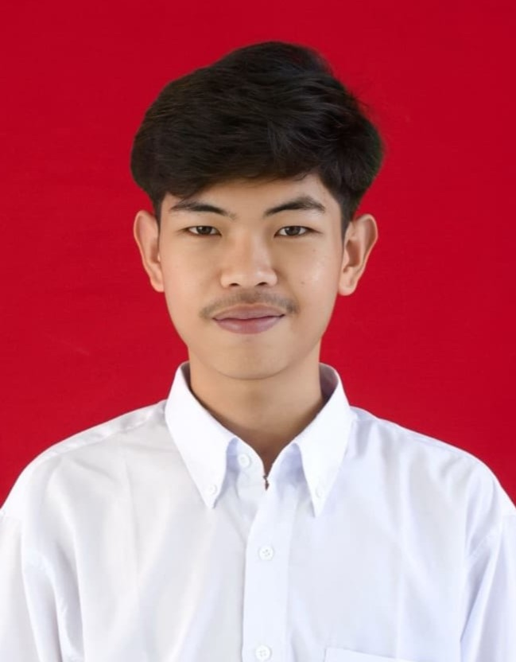

Information Systems Student • Web Developer • Creative Soul
Hubungi SayaSaya adalah mahasiswa Sistem Informasi yang bersemangat dalam membangun ekosistem digital. Fokus utama saya adalah menciptakan pengalaman pengguna yang mulus melalui website modern, responsif, dan fungsional.
Universitas Terbuka • 2022 - Sekarang
Fokus pada pengembangan aplikasi web dan manajemen data organisasi.
Coding
Fotografi
Gaming
Traveling